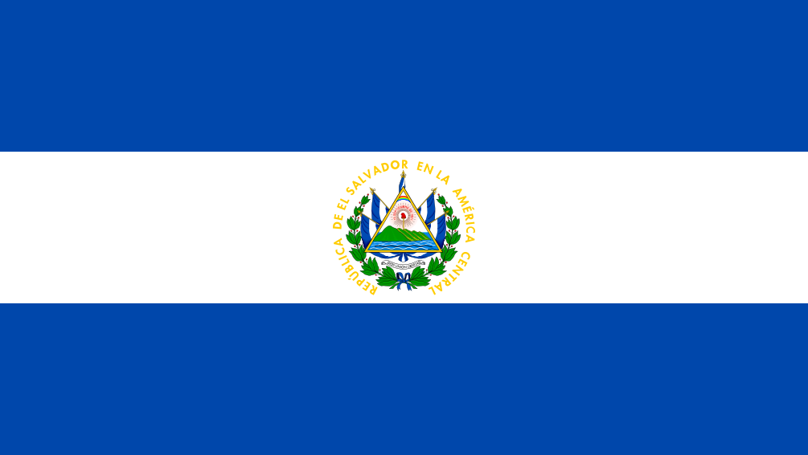
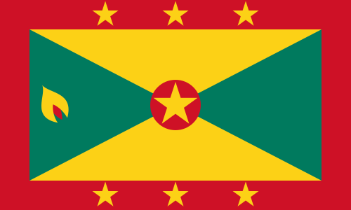
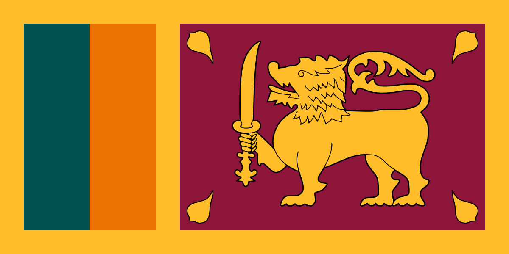
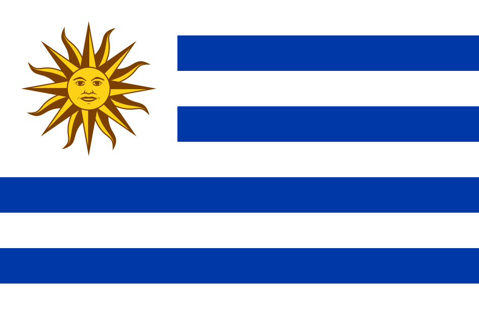
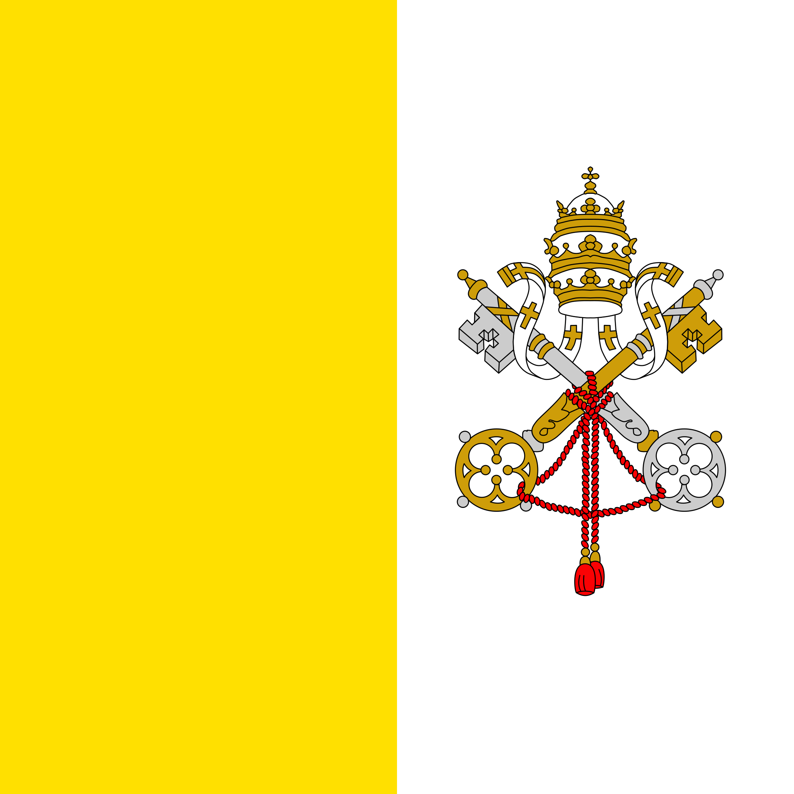
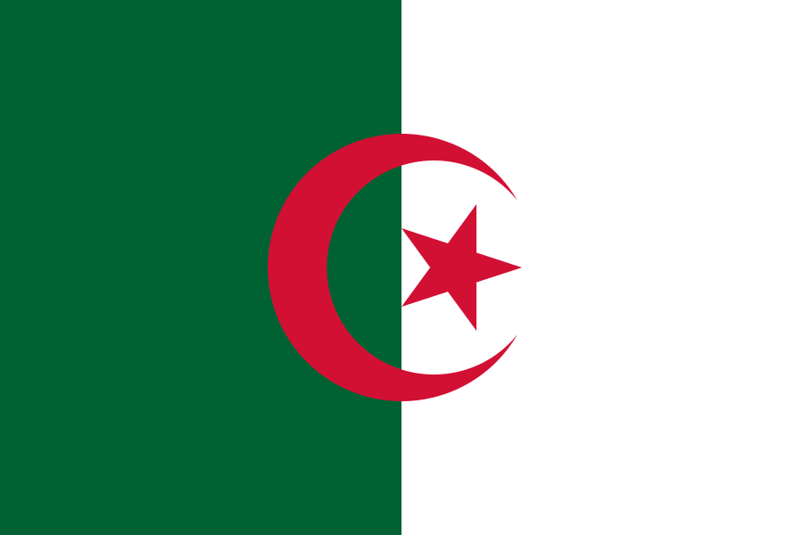
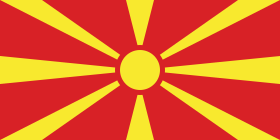
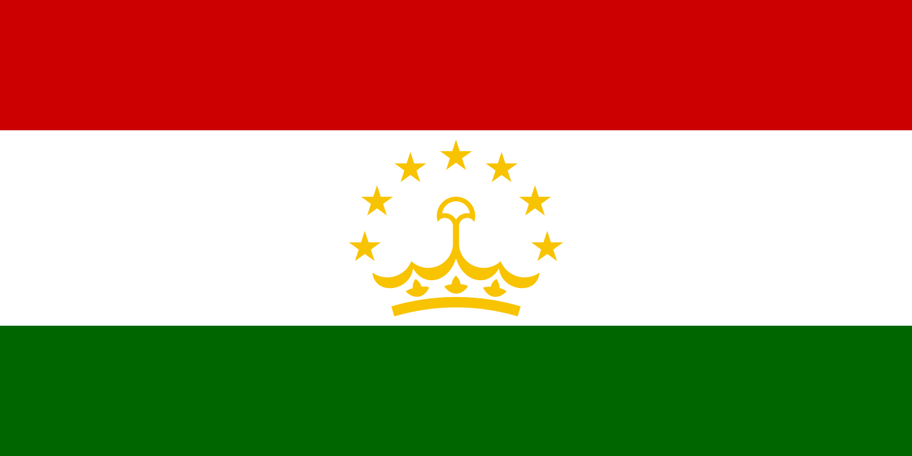

Question 131Completed result

Country (revealed after completion)
El Salvador
Currency🟩 Independent
Your answer: DollarCurrent currency: US Dollar (USD)
Attempts: Peso → Dollar
Peso -> Dollar, correct unassisted retry, +1 Pure/+1 P+A.
Edition 1 · Q131–Q140 · all 10 graded
| Score | Currencies |
|---|---|
| Pure | 8/10 |
| Pure + Assisted | 9/10 |
| Independent | 8 |
| Assisted | 2 |
| Wrong | 0 |
| Cancelled | 0 |
| Score | Currencies |
|---|---|
| Pure | 98/139 |
| Pure + Assisted | 102.5/139 |
| Independent | 98 |
| Assisted | 9 |
| Wrong | 32 |
| Cancelled | 1 |
Original flags, submitted attempts and correct current currencies. Q57 remains previously cancelled for an unfair flag and excluded from the denominator.

Attempts: Peso → Dollar
Peso -> Dollar, correct unassisted retry, +1 Pure/+1 P+A.

Attempts: Dollar
Correct initial answer, Independent +1.
Attempts: Euro
Correct initial answer, Independent +1.
Attempts: Dollar
Correct initial answer, Independent +1.

Attempts: Rupee
Correct initial answer, Independent +1.

Attempts: Peso
Correct initial answer, Independent +1.

Attempts: Euro
Correct initial answer, Independent +1.

Attempts: Dinar
Correct initial answer, Independent +1.

Attempts: Euro → clue → Dinar
Dinar accepted as near-identical phonetic/cognate variant of Denar after requested clue, 0 Pure/+0.5 P+A.

Attempts: Som → clue → somani
Somani accepted as phonetic variant of Somoni after requested clue, 0 Pure/+0.5 P+A. Original Som is a different currency name, not the same family merely because of shared initial letters. User asked why; explanation supplied with central-bank sources. User is final referee.
| Q | Flag | Correct Country | First Answer | Final Answer | Correct Currency + ISO | Result |
|---|---|---|---|---|---|---|
| 131 | El Salvador | Peso | Dollar | US Dollar (USD) | 🟩 Independent | |
| 132 | Grenada | Dollar | Dollar | East Caribbean Dollar (XCD) | 🟩 Independent | |
| 133 | Estonia | Euro | Euro | Euro (EUR) | 🟩 Independent | |
| 134 | Marshall Islands | Dollar | Dollar | US Dollar (USD) | 🟩 Independent | |
| 135 | Sri Lanka | Rupee | Rupee | Sri Lankan Rupee (LKR) | 🟩 Independent | |
| 136 | Uruguay | Peso | Peso | Uruguayan Peso (UYU) | 🟩 Independent | |
| 137 | Vatican City | Euro | Euro | Euro (EUR) | 🟩 Independent | |
| 138 | Algeria | Dinar | Dinar | Algerian Dinar (DZD) | 🟩 Independent | |
| 139 | North Macedonia | Euro | Dinar | Macedonian Denar (MKD) | 🟨 Assisted | |
| 140 | Tajikistan | Som | somani | Tajikistani Somoni (TJS) | 🟨 Assisted |
140 / 195 countries encountered · 139 graded currency answers · 1 earlier cancelled · 55 remaining